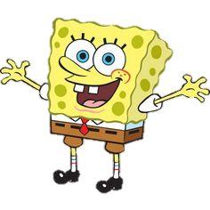

Personajes
| PERSONAJES | CARACTERISTICAS | IMAGEN |
|---|---|---|
| Bob Esponja | Es una esponja de mar amarilla antropomórfica que suele llevar pantalones cortos marrones, una camisa blanca de cuello y una corbata roja. Vive en una casa de piñas y trabaja como cocinero de frituras en un restaurante de comida rápida llamado Crustáceo Cascarudo |  |
| Calamardo | Es un calamar de color azul verdoso, amargado y arrogante. Se puede decir que es el antagonista, puesto que busca estar alejado de Bob y Patricio. Es un decadente vecino cefalópodo de Bob Esponja y Patricio. Bob Esponja y Patricio lo consideran su amigo, aunque él los detesta por su falta de inteligencia. | Patricio Estrella | Es una alegre estrella de mar rosa que vive bajo una roca. Viste pantalones cortos de color verde estampados con flores púrpura. Es perezoso, con sobrepeso, y es el mejor amigo de Bob Esponja. Su rasgo más destacado es su nula capacidad de concentración, su ingenuidad y su escasa inteligencia. | |
| Eugene H. Cangrejo | Es un cangrejo muy avaro y tacaño con el dinero que gana (a veces incluso hasta el punto de la locura) y detesta gastarlo. Él es el dueño del Crustáceo Cascarudo y jefe de Bob Esponja y Calamardo. | |
| Arenita Mejillas | Es una ardilla de tierra muy inteligente, aunque algo presumida. Es originaria de Texas como su madre, de lo que presume con orgullo con su forma de caminar. Es la mejor amiga de Bob y Patricio, aunque se pelea a menudo con Patricio. Es la ciudadana más inteligente de todo Fondo de Bikini. | |
| Señora Puff | Es una pez globo con el pelo rubio. Es la directora y profesora de La Escuela de Botes de la Señora Puff (análoga a las escuelas de conducción, dado a que los "botes" son equivalentes a los automóviles). Su peor alumno es Bob Esponja, quien debido a su pésima concentración al volante, ha tenido que hacer la prueba de conducción una infinidad de veces, lo que provoca choques y caos en Fondo de Bikini. | |
| Plankton | Es un copépodo de color verde. Su nombre de pila es Sheldon. Originalmente, este personaje fue diseñado como un villano recurrente que ocasionalmente irrumpiría en la rutina para crear algunas situaciones caóticas, pero la popularidad de Plancton le ha asegurado un puesto fijo en el elenco de personajes habituales de la serie. Se considera el rival de Don Cangrejo | |
| Karen Plankton | Es una supercomputadora y la esposa de Plankton. A menudo expresa emociones humanas (regularmente ironía y sarcasmo) y actúa como un humano. Karen por lo general ayuda a Plankton en sus planes para robar la fórmula de las cangreburguers o causar problemas en general. Argumentando a menudo en la serie, los planes de Karen son ignorados o él se apropia del crédito de ellos; suele parecer ser más pensativa, inteligente, y lógica que Plankton | |
| Perlita Cangrejo | Es una ballena joven (un cachalote) y es una chica consentida y presumida que gusta de andar a la moda como sus amigas de la escuela. Es con frecuencia avergonzada por la actitud mezquina de su padre, y muchas veces le obliga a tratar de cambiar sus hábitos. | |
| Gary | Es un caracol de mar, mascota de Bob Esponja. Dentro de la serie, los caracoles son análogos a los gatos, por lo que Gary vocaliza como un felino. A pesar de esto, otros personajes pueden entender y comunicarse con él. Representado como un personaje sensato, Gary a veces sirve como una voz de la razón de Bob Esponja, y resuelve los problemas que su propietario no puede. |